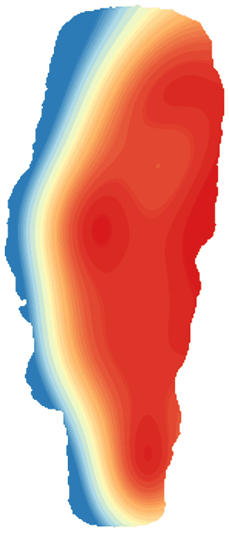

LakeScope › UT
Bear Lake today
Updated 2026-11-14 - Atlas Labs
Clear water, 53°F water, level steady, 5 ft below normal, calm this afternoon.
Water level
5918.45 ft
USGS gauge 10055000 - 2026-11-14
7-day trend: steady (+0.01 ft). Compared with normal for this date: -4.5 ft (same weeks, 2019-2025).
Water clarity and algae
Clear water Last clear view: a few days ago.
Surface temperature
53°F
seen from space on 2026-11-12

Ice
Open - 0% ice cover
Estimate from weather and satellite, not a measurement. Check the ice yourself before going on it.
Weather, next 3 days
| Day | Sky | High / low | Wind | Rain |
|---|---|---|---|---|
| Saturday | Light Rain | 48 / 36°F | 6 mph NNW | 76% |
| Sunday | Mostly Sunny | 50 / 37°F | 6 mph SE | 0% |
| Monday | Partly Sunny | 52 / 39°F | 7 mph S | 2% |
Sunrise 07:14 - sunset 17:04 - Waxing crescent. National Weather Service.